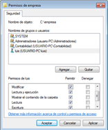
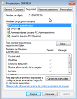
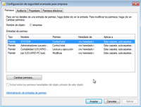
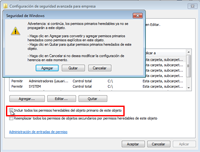
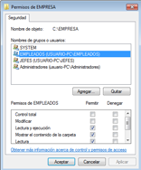
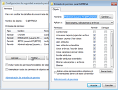

Pongamos un ejemplo, creemos en la raíz de nuestro volumen (con sistema de archivos NTFS) una carpeta con nombre EMPRESA. Una vez creada, accedemos a sus propiedades y en ellas a la pestaña Seguridad:
Podemos ver como en la parte superior tenemos las SID a las que concedemos permisos (usuarios y grupos) y en la parte inferior tenemos los permisos concretos que le concedemos a dicha SID. Si ves las dos columnas por cada permiso, podemos tanto Permitir como Denegar un permiso. La denegación de un permiso es la que más pesa, y se aplica inmediatamente. De hecho, se aconseja no denegar permisos, a menos que sea absolutamente necesario.
Con el botón Editar se nos abre una nueva pantalla donde aparecen los botones Agregar y Quitar. Con ellos podemos añadir o quitar usuarios o grupos de la ACL. En la parte inferior podemos pulsar en las casillas de Permitir y Denegar para dar y quitar permisos.
¿Te has fijado que la columna de Permitir está en gris y no nos deja cambiarla? Pero, ... ¿por qué razón ocurre esto? Bien, en este momento, nos toca hablar de la herencia.
Tomamos de referencia, de nuevo, a la carpeta llamada EMPRESA, vamos a prepararla para que pueden leer y escribir en ella los usuarios que sean miembros del grupo EMPLEADOS, para que sólo puedan leer los del grupo JEFES pero no escribir, y que los demás usuarios no puedan ni leer en ella ni escribir. Bien, si ahora dentro de la carpeta EMPRESA creamos una nueva carpeta INFORMES, ¿no sería lógico que esta carpeta INFORMES "heredará" la ACL de su carpeta superior EMPRESA para que no tuviera que configurarla nuevamente?
Pues precisamente eso es lo que hace Windows 7, cualquier recurso que creemos, heredará automáticamente la ACL de su recurso padre si es que existe. En nuestro caso, la carpeta EMPRESA ha heredado la ACL de la raíz de nuestro volumen. De modo que no podremos quitar usuarios, quitar permisos, etc.
Para realizar cambios en la ACL de nuestra carpeta EMPRESA, debemos indicarle que "rompa" la herencia, es decir, que deseamos retocar manualmente su ACL.
Para ello, accedemos al botón de Opciones Avanzadas que está en la pestaña Seguridad.
Podemos ver en estas opciones avanzadas 4 pestañas, de momento nos quedamos en la primera, permisos.
Vemos como en la parte inferior de esta ventana, podemos ver como esta marcada la opción de:
"Incluir todos los permisos heredables del objeto primario de este objeto".
Esto implica: "Heredar del objeto principal las entradas de permiso relativas a los objetos secundarios e incluirlas junto con las entradas indicadas aquí de forma explícita". Si desmarcamos dicha opción mataremos la relación de herencia de nuestro recurso, y podremos gestionar su ACL "directamente". Vamos a ello.
Hay que tener cuidado, una vez quitada la herencia, el sistema nos da a elegir entre dos opciones: Si escogemos la opción Agregar, la herencia se interrumpirá, y podremos retocar la ACL como nos plazca, pero dicha ACL será la que ahora mismo tiene el recurso, heredada de su objeto principal.
Si escogemos la opción Quitar, la ACL se borrará totalmente, se interrumpirá la herencia y la podremos crear desde cero.
Si elegimos quitar y empezar desde cero, hay que tener en cuenta que en las ACL no sólo deben aparecer nuestras SID normales, sino que grupos como Creator Owner o System son necesarios para que el sistema pueda trabajar sin problemas con dichas carpetas. Si quitamos estos SID tendremos problemas en el futuro (copias de seguridad, auditorías, etc.).
Vemos que debajo de la opción de Heredar del objeto principal, tenemos otra opción que nos permite activar que los objetos por debajo del nuestro hereden las modificaciones que hagamos en nuestra ACL. Esto es importante tenerlo en cuenta si queremos que los cambios que hagamos en la ACL se repliquen en los objetos hijos del nuestro, ya que hemos roto la herencia y a veces tendremos que forzar dichos cambios.
Agregaremos en este momento a los grupos EMPLEADOS y JEFES y les asignaremos los permisos antes citados. Una vez eliminada herencia de permisos podremos quitar los grupos predeterminados de Windows que no nos hacen falta en nuestro ejemplo, estos son, Usuarios y Usuarios autenticados. El motivo principal para eliminarlos de la ACL de la carpeta EMPRESA es que si los dejáramos cualquier usuario del sistema podría acceder y ver el contenido de la carpeta. Esto es así, porque cuando creamos un usuario en Windows, éste lo hace miembro automáticamente de estos grupos. La ACL de la carpeta EMPRESA quedaría como vemos en la imagen. Resumiendo, los grupos de usuarios que deben tener acceso a la carpeta EMPRESA serán el grupo de Administradores (con Control total - todos los permisos), el grupo SYSTEM (creados estos dos grupos de forma automática por Windows) y los grupos EMPLEADOS y JEFES.
Los distintos permisos que se pueden aplicar para cada SID en la ACL no son únicamente los que vemos en las propiedades de la carpeta, si entramos desde la pestaña de Seguridad en Opciones avanzadas veremos un cuadro llamado Entradas de permisos para los distintos usuarios y grupos de la ACL. Tras esto, hacemos click en el botón Cambiar permisos y después en el botón Editar. De esta manera, veremos cómo podemos indicar otro tipo de permisos.
El permiso Atravesar carpeta permite o impide que el usuario pase de una carpeta a otra para llegar a otros archivos o carpetas, incluso aunque el usuario no tenga permisos para las carpetas recorridas (sólo se aplica a carpetas).
El permiso Leer atributos permite o impide que el usuario vea los atributos de un archivo o de una carpeta, como sólo lectura y oculto. Los atributos están definidos por el sistema de archivos NTFS.
El permiso Escribir atributos permite o impide que el usuario cambie los atributos de un archivo o de una carpeta, como sólo lectura y oculto. Los atributos están definidos por el sistema de archivos NTFS.
El permiso Tomar posesión permite o impide que el usuario tome posesión del archivo o de la carpeta. El propietario de un archivo o de una carpeta puede cambiar los permisos correspondientes, cualesquiera que sean los permisos existentes que protegen el archivo o la carpeta.
Un permiso muy especial es el de Control Total. Si este permiso se lo otorgamos a un usuario en una carpeta, este usuario podrá eliminar cualquier cosa que haya en esa carpeta, incluso si le denegamos el permiso de eliminación en esos recursos. Hay que tener mucho cuidado al conceder este permiso.
{kind=link}
{kind=link}
{kind=link}
{kind=link}
{kind=link}
{kind=link}